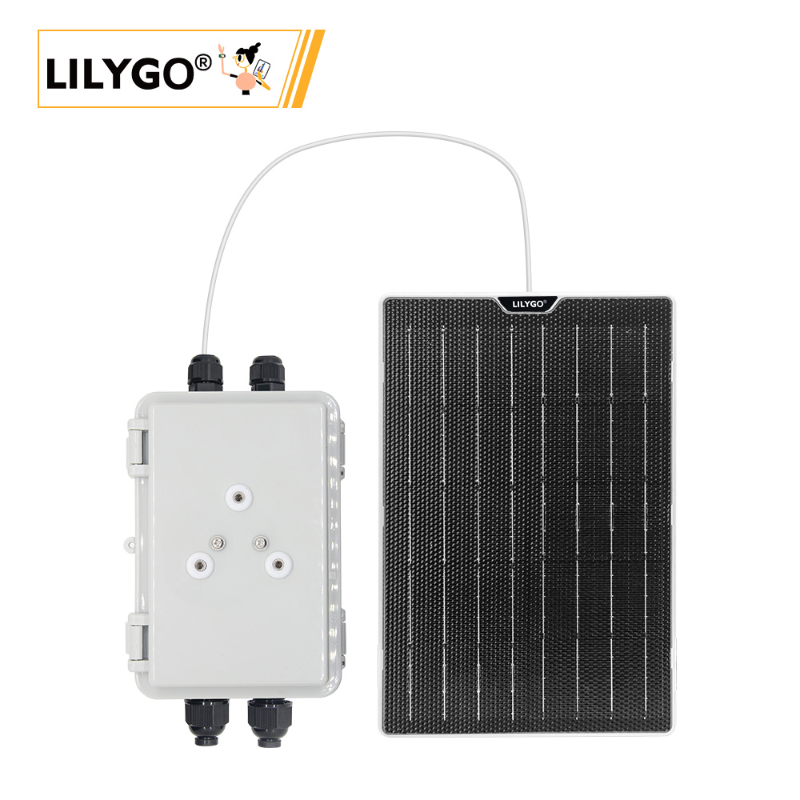
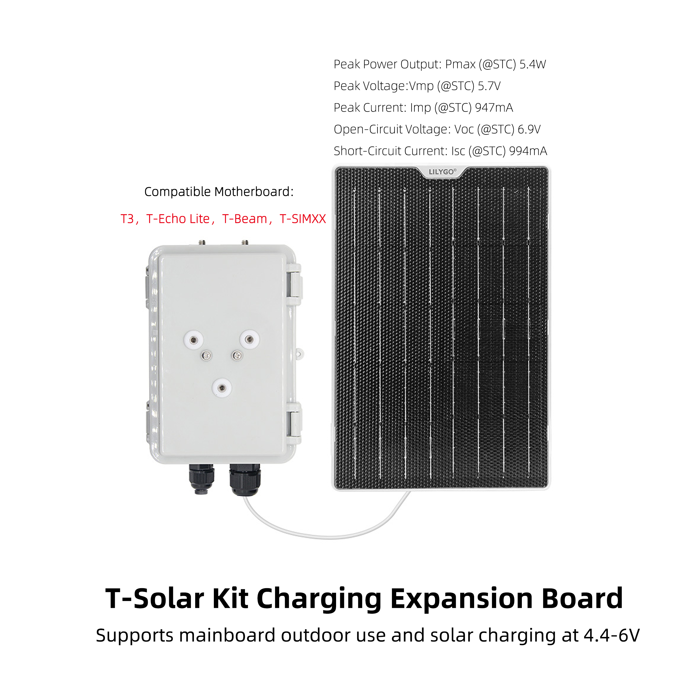
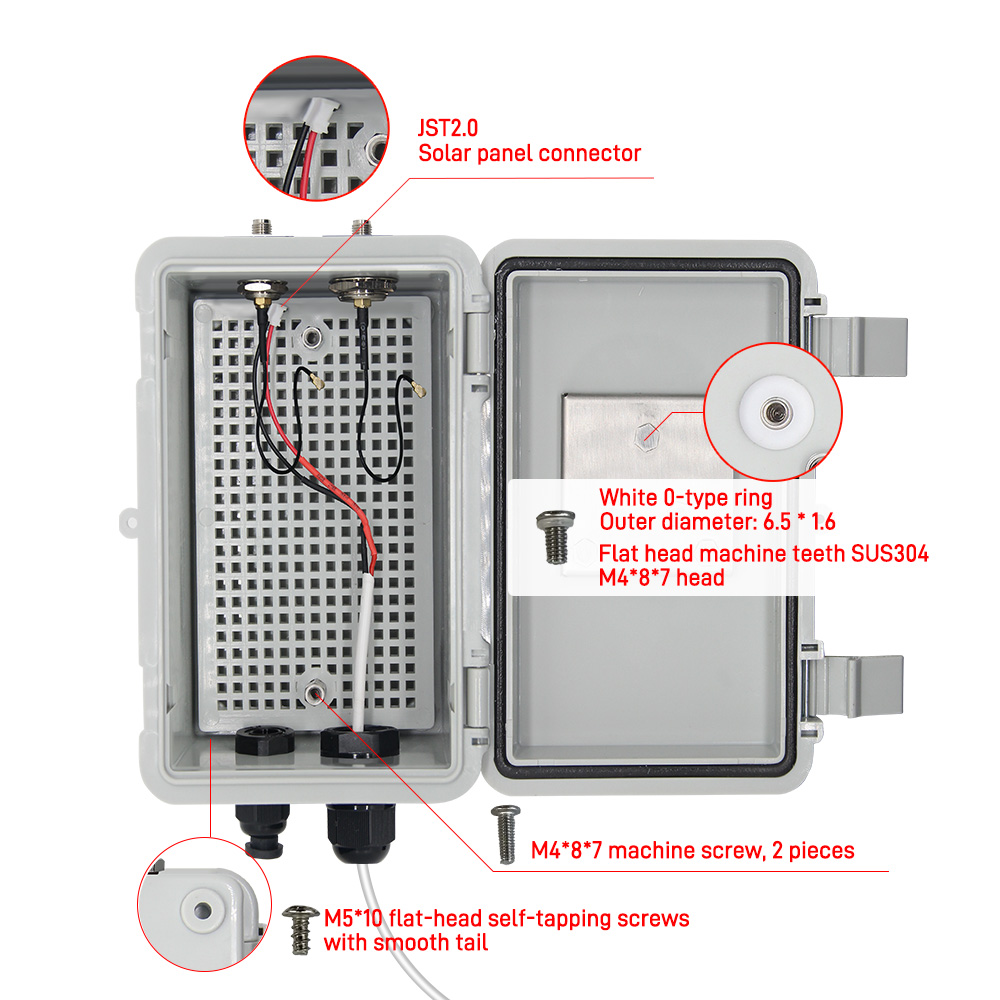
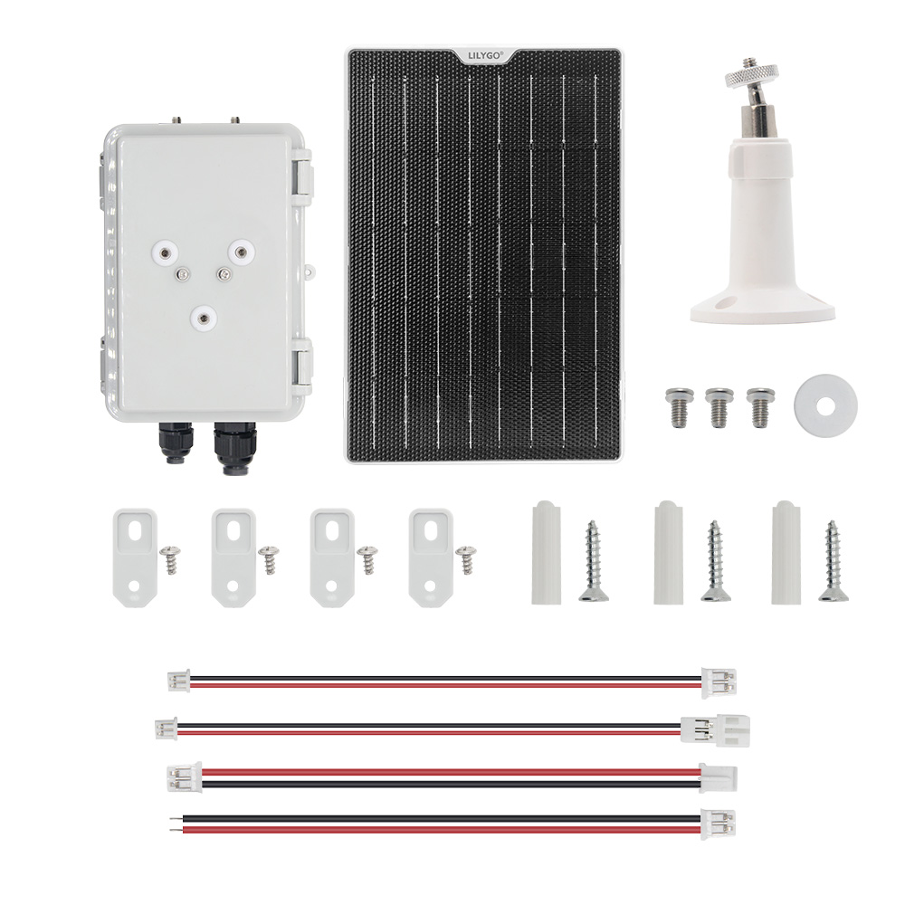
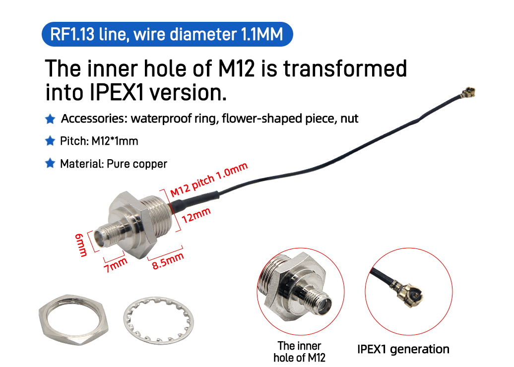
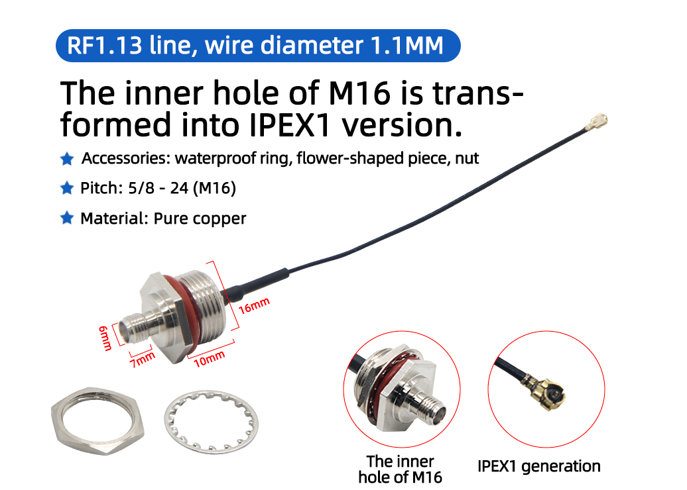

中文 简体
中文 简体LILYGO T-Solar

🚀 产品概述
T-Solar Kit 是一款专为户外物联网设备设计的太阳能充电扩展解决方案。它能为各类低功耗户外设备（如环境传感器、农业监测站、野外定位终端等）提供稳定可靠的离网供电，让您的设备在无市电环境下也能长期稳定运行。
核心特性
- ✅ 智能充电管理：支持4.4-6V宽电压输入，兼容峰值功率5.4W的太阳能板
- ✅ 即插即用：标准JST2.0接口，安装简单快捷
- ✅ 全配件套件：包含所有安装螺丝、垫圈和转接头，开箱即用
- ✅ 坚固耐用：SUS304不锈钢配件，适合户外恶劣环境
- ✅ 广泛兼容：支持T3、T-Beam、T-Echo Lite等主流IoT主板
📦 产品规格
太阳能板参数

| 参数 | 数值 |
|---|---|
| 峰值功率 (Pmax) | 5.4W |
| 峰值电压 (Vmp) | 5.7V |
| 峰值电流 (Imp) | 947mA |
| 开路电压 (Voc) | 6.9V |
| 短路电流 (Isc) | 994mA |
套件内容清单
- T-Solar 充电扩展板 ×1
- 太阳能板连接线 (JST2.0接口)
- M4×8×7机器螺丝 ×2
- M5×10平头自攻螺丝 ×2
- SUS304不锈钢垫圈 ×2
- IPEX转接头 (M12/M16可选)
🔧 安装与使用
连接示意图

快速安装步骤

- 连接太阳能板：将太阳能板的JST2.0接口连接到扩展板
- 固定扩展板：使用附赠的M4/M5螺丝将扩展板固定在设备上
- 连接主板：将扩展板的输出端连接到兼容主板
- 部署测试：将太阳能板朝向阳光，检查充电状态
📹 视频教程：T-Solar Kit 安装视频
天线安装选项
- M12接口：

- M16接口：

🎯 应用场景
🌾 智慧农业
- 土壤湿度监测站
- 气象数据采集终端
- 灌溉系统控制器
🌳 环境监测
- 空气质量传感器网络
- 水质监测浮标
- 森林防火预警设备
📡 物联网应用
- 远程资产追踪器
- 智能路灯控制器
- 野外科研数据采集站
常见问题
Q1: 可以连接更大功率的太阳能板吗？
A: 本产品设计为5.4W峰值输入，不建议使用功率超过6W的太阳能板。
Q2: 在阴雨天能否正常工作？
A: 扩展板支持4.4V低压输入，在弱光环境下仍能保持充电，但效率会降低。
Q3: 支持哪些类型的电池？
A: 支持3.7V锂离子/锂聚合物电池，内置智能充电保护电路。
Q4: 安装需要特殊工具吗？
A: 套件包含所有必需配件，只需准备一把十字螺丝刀即可完成安装。